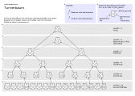

|
||||||||||
| PREV PACKAGE NEXT PACKAGE | FRAMES NO FRAMES | |||||||||
See:
Description
| Class Summary | |
|---|---|
| ConductorTestUtil | Hilfsklasse fuer die Unit-Tests in diesem Package |
| ConductorTestUtil.TestDatabase | TestDatabase |
| ConductorToDatabaseAdapter | Stellt der Klasse ContestConductor Methoden zur Verfügung, um mit der Wettbewerbs-Datenbank zu arbeiten. |
| ContestConductor | ContestConductor-View |
| ContestConductor.BotView | Merkt sich zu einem Bot (aus dem Model) die Datenbank-ID und, ob es sich um bot1 oder bot2 handelt (wichtig in der ctsim_game-Tabelle / in der ctsim_log-Tabelle). |
| ContestConductor.ContestJudge | ContestJudge |
| ContestConductorTest | Test-Case, der einen vollen Wettbewerbsdurchlauf testet. |
| ContestConductorTest.MockContestJudge | ContestJudge-Attrappe, die zu Testzwecken immer Bot 1 im ersten Simulationsschritt zum Sieger erklärt. |
| ContestDatabase | Repräsentiert die Datenbank, die alles über den Wettbewerb ("contest") weiß. |
| DatabaseAdapter | Diese Klasse (und die von ihr abgeleiteten) abstrahieren die Datenbank, d.h. sitzen zwischen der Datenbank für den Wettbewerb Oktober 2006 einerseits und ContestConductor / TournamentPlanner andererseits. |
| PlannerToDatabaseAdapter | Stellt der Klasse TournamentPlanner Methoden zur
Verfügung, um mit der Wettbewerbs-Datenbank zu arbeiten. |
| ScreenshotUploadTool | Dings, das ein Verzeichnis voller Screenshots in eine Datenbank hochlädt. |
| SpreadingTree<T> | Der Turnierbaum ist folgendermassen zu verstehen: Ein Knoten des Baums repräsentiert einen Spieler Die beiden Kinder eines Knotens U repräsentieren die beiden Spiele, deren Gewinner im Spiel U aufeinandertreffen werden. |
| TournamentPlanner | High-Level-Klasse, die die Spiele eines Turniers plant. |
| TournamentPlannerTest | Testklasse |
| TournamentTree | Baut den grundlegenden Turnierbaum der Hauptrunde. |
| TournamentTree.Player | Spieler |
| TournamentTreeGuiTest | Testklasse |
| Enum Summary | |
|---|---|
| ContestConductor.Phase | Status des ContestConductor-Subsystems. |
| DatabaseAdapter.GameState | Repräsentiert die moeglichen Zustände eines Spiels. |
| Exception Summary | |
|---|---|
| ContestConductor.NoMoreGamesException | NoMoreGamesException |
| TournamentPlanner.TournamentPlanException | Diese Exception tritt auf, wenn etwas mit dem Turnierplan nicht stimmt. |
Ermöglicht die Durchführung eines c't-Bot-Wettbewerbs wie den im Oktober 2006. Das Package verwendet eine MySQL-Datenbank ( Dokumentation des Schemas, Schema als SQL-Skript).
Die Rangliste aus der Vorrunde ermöglicht Ausgewogenheit im Turnierplan der Hauptphase: Die Spieler werden so platziert, dass sich der schnellste und der zweitschnellste aus der Vorrunde erst im Finale begegnen können, der schnellste und der drittschnellste erst im Halbfinale usw. So werden allzu verzerrte Wettbewerbsergebnisse vermieden – gäbe es z.B. eine einfache Auslosung statt einer Vorrunde, könnten zufällig die beiden besten Implementierungen in der ersten Runde aufeinandertreffen. Das würde heißen, dass einer der beiden Schnellsten schon im ersten Durchgang ausscheidet, was seine tatsächliche Stärke verfälscht widerspiegelt. Die Vorrunde soll das vermeiden und helfen, die Spannung bis zuletzt aufrechtzuerhalten.
Für die Hauptphase gilt: Treten nicht genügend Teams an, um alle Zweikämpfe des ersten Durchgangs zu füllen, erhalten möglichst viele Bots ein Freilos, das sie automatisch für die nächste Runde qualifiziert. Im Extremfall findet somit in der ersten Runde des Turniers nur ein einziges Duell statt – dafür sind alle anschließenden Durchgänge voll besetzt.
Turnierbaum
Beispiel:

Der Turnierbaum beschreibt:
Außenwelt
(DefaultController)
|
|
|
|
v hat einen
ContestConductor -------------------------> TournamentPlanner
| |
| |
| hat einen | hat einen
| |
v v
ConductorToDatabaseAdapter ----. .---- PlannerToDatabaseAdapter
| |
| |
ist abgeleitet von | | ist abgeleitet von
| |
v v
DatabaseAdapter
|
|
| ist verbunden mit
|
v
MySQL-Datenbank
Der TournamentPlanner ist wichtig vor dem eigentlichen
Turnier: er plant die Vorrunde und erstellt den Turnierbaum (s.o.). Der
ContestConductor ist wichtig waehrend dem Turnier: Er laedt
gemaess dem Turnierbaum die zwei Kontrahenten, laesst sie spielen, ermittelt den
Gewinner und traegt ihn im Turnierbaum ein.
|
||||||||||
| PREV PACKAGE NEXT PACKAGE | FRAMES NO FRAMES | |||||||||